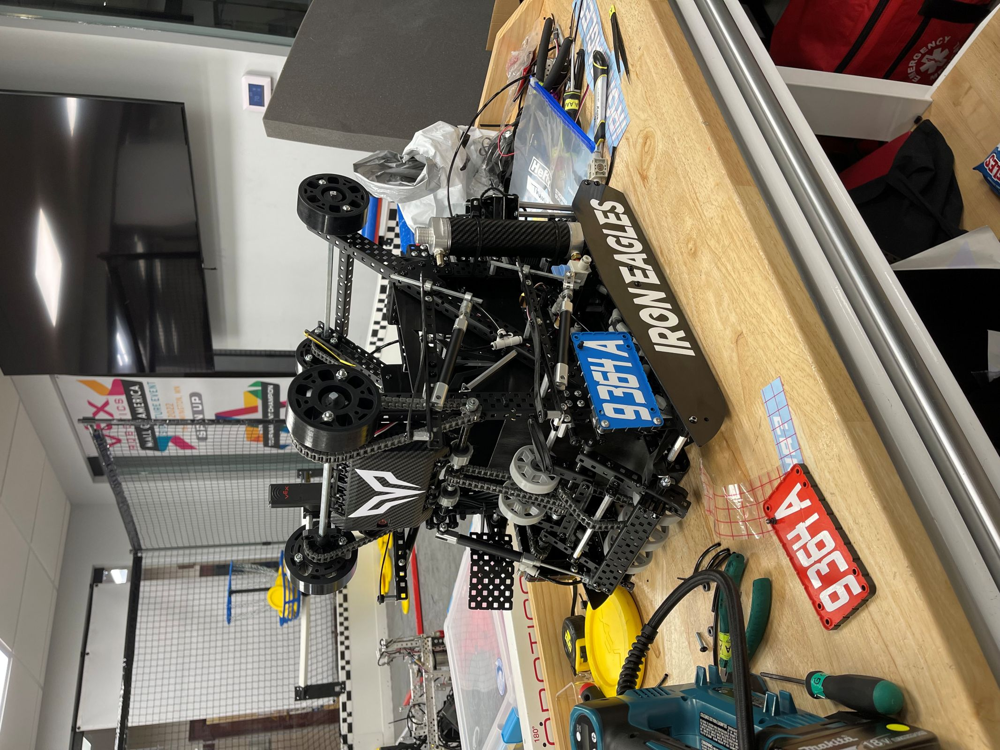
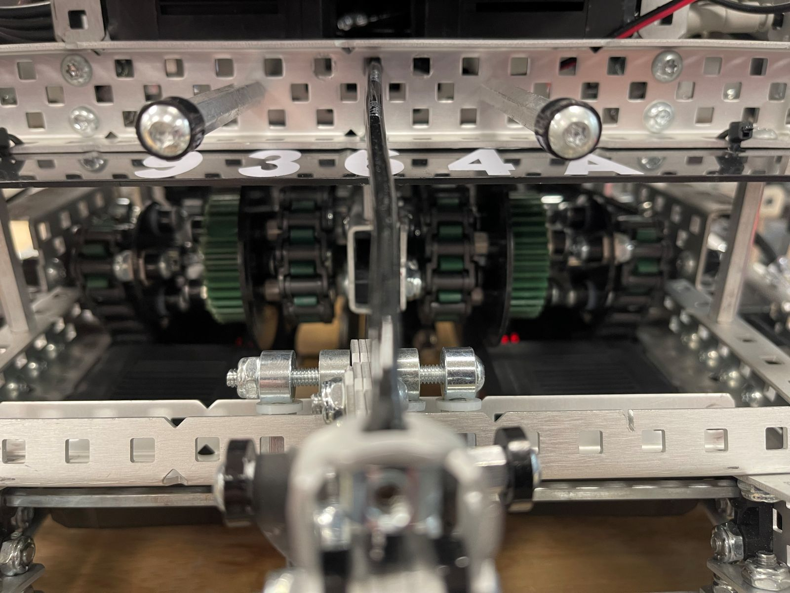
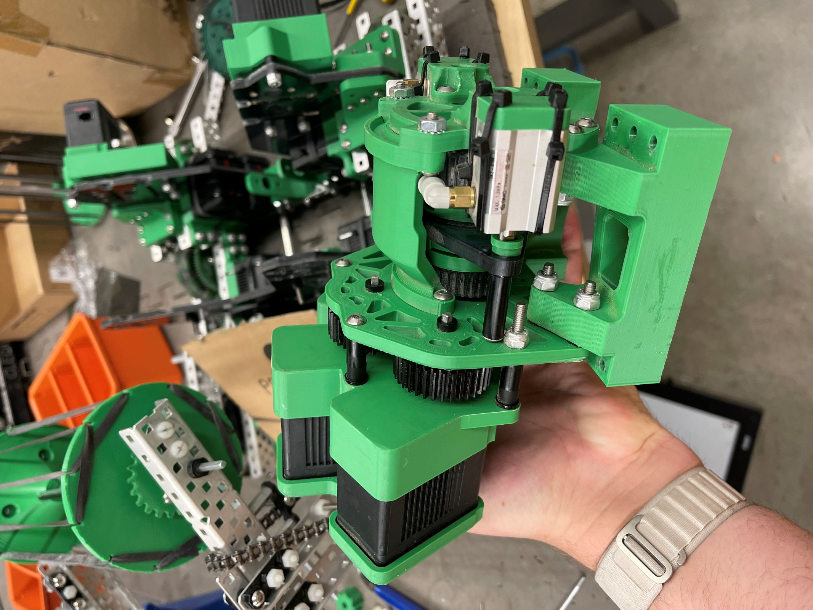

Results
- State champions three seasons in a row 2020-2022
- Won the Canadian Open signature event 2023
- Qualified for the World Championship five times 2020-2024
- Design and build awards at Worlds Build Award: 2022, Design Award: 2023
Mechanisms I built
This is where most of my experience building robots comes from. Over 7 seasons I designed and built a range of mechanisms under tight weight, size, and motor limits.
Power take-off
A power take-off lets the same motors drive either the drivetrain or another mechanism, so the robot gets more out of a limited set of motors. The power take-off functioned by using a phenumatic piston to shift a coupling gear between coupling with the robots intake or giving the robots drivetrain extra power.
Dual-mode transmission
The dual-mode transmission was designed for the drivetrain of the robot to allow it to shift from a speed of 333 rpm to 120 rpm. We belived that having a low gear to push other robots around would be benifical for that years game to control space. The transmission shifted using a short stroke phenumatic piston that would move a middle gear forward or backward to couple with either gear ratio along the same axel.
Flywheels, catapults, and lifts
The most challenging design problem that I faced when creating flywheels was finding the right amount of compression pushing the object into the flywheel to launch the object as far as possible. The hardest design challenge that I faced when designing catapult mechanisms was finding the right geometry to launch multiple objects togeather and have them stay togeather in the air. The biggest challenges I faced when designing lifts were making them structurally rigid when lifting but also light enough lift quickly.


What it taught me
Competing in competitive robotics taught me the importance of teamwork, Time management under a deadline, and the engineering design process.